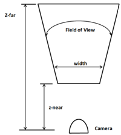
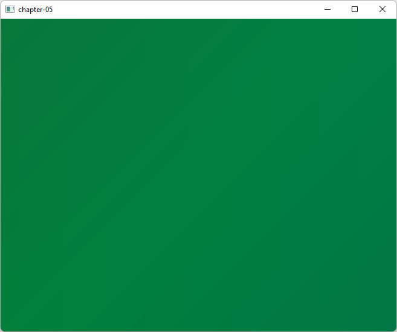
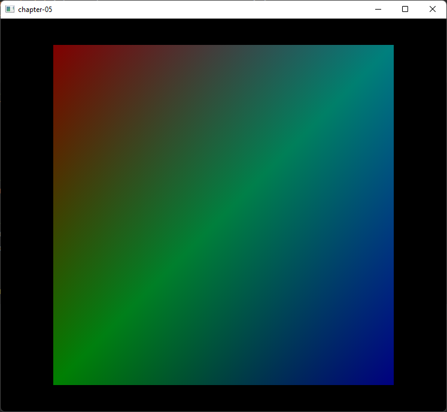

第五章 透视投影（Perspective projection）
在本章中，我们将学习两个重要概念，透视投影（Perspective Projection）（用于让远处的物体看起来比近处的小）和统一变量（Uniforms）（一种类似缓冲区的结构，用于向着色器传递额外数据）。
你可以在这里找到本章的完整源代码。
透视投影
让我们回到上章中创建的漂亮彩色四边形。如果你仔细观察，会发现这个四边形被扭曲成了一个矩形。你甚至可以把窗口宽度从600像素改成900像素，扭曲现象会更加明显。这是怎么回事呢？
如果你回顾我们的顶点着色器代码，你会看到我们只是直接传递了坐标。也就是说，当我们说一个顶点在x坐标为0.5时，我们实际上是在告诉OpenGL：在屏幕上的x位置0.5处绘制它。下图展示了OpenGL坐标系（仅展示x和y轴）。

这些坐标会根据窗口大小映射到窗口坐标（窗口坐标的原点位于上图的左上角）。所以，如果我们的窗口大小是900x580，OpenGL坐标（1,0）将被映射到窗口坐标（900,0），从而创建了一个矩形而不是一个四边形。

但问题比这更严重。将我们四边形的z坐标从0.0改成1.0和-1.0。你看到了什么？无论它在z轴上移动到哪里，四边形仍然绘制在同一个地方。为什么会这样呢？远离的物体应该被绘制得更小才对。但我们绘制时，x和y坐标保持不变。
但是等等。难道z坐标不应该处理这个问题吗？答案是：是的，也是“不完全是”。z坐标告诉OpenGL物体离我们是近还是远，但OpenGL并不知道物体的实际大小。你可能有两个不同尺寸的物体，一个近一个远，但由于大小不同，它们可以投影到屏幕上相同的尺寸（即具有相同的x和y坐标，但不同的z坐标）。OpenGL只是使用我们传递的坐标，所以我们必须自行正确地投影这些坐标。
既然我们发现了问题，应该怎么解决呢？答案是使用透视投影矩阵（Perspective Projection Matrix）。透视投影矩阵会处理绘制区域的纵横比（Aspect Ratio）（即宽度与高度的关系），避免物体被扭曲。同时它也会根据距离调整物体大小，使远处物体绘制得更小。投影矩阵还会考虑我们的视野角（Field of View）和最大可显示距离。
如果你不熟悉矩阵，矩阵是一种二维数组，由行和列排列的数字组成。矩阵中的每个数字被称为元素。矩阵的阶数是其行数和列数。例如，下面是一个2x2矩阵（2行2列）。

矩阵有许多基本运算（如加法、乘法等），你可以在数学书中查阅。与3D图形相关的矩阵的主要特点是，它们非常适合用于空间中点的变换。
你可以把投影矩阵想象成一个相机，它有视野范围和最小/最大距离。该相机的可视区域是一个被截断的金字塔。下面的图显示了从顶部视角看到的那片区域。

投影矩阵将正确地映射3D坐标，以便它们能在2D屏幕上正确显示。这个矩阵的数学表达式如下（别害怕）。
当你看到这行字时记得提醒我更新这张图片
其中，纵横比是屏幕宽度与高度的关系（\(a=width/height\)）。为了获得某个点的投影坐标，我们只需将投影矩阵与原始坐标相乘。结果是一个新的向量，包含了投影后的坐标。
因此，我们需要处理一些数学实体，如向量、矩阵，并包含它们的操作。我们可以选择从零开始自己编写所有代码，或者使用已有的库。我们选择简单的方法，使用轻量级Java游戏库中的一个专门用于数学运算的库，叫做Java OpenGL数学库（Java OpenGL Math Library，简称JOML）。要使用该库，只需在pom.xml文件中添加一个依赖。
<dependency>
<groupId>org.joml</groupId>
<artifactId>joml</artifactId>
<version>${joml.version}</version>
</dependency>
一切准备好后，我们来定义投影矩阵。我们将创建一个名为Projection的新类，定义如下：
package org.lwjglb.engine.scene;
import org.joml.Matrix4f;
public class Projection {
private static final float FOV = (float) Math.toRadians(60.0f);
private static final float Z_FAR = 1000.f;
private static final float Z_NEAR = 0.01f;
private Matrix4f projMatrix;
public Projection(int width, int height) {
projMatrix = new Matrix4f();
updateProjMatrix(width, height);
}
public Matrix4f getProjMatrix() {
return projMatrix;
}
public void updateProjMatrix(int width, int height) {
projMatrix.setPerspective(FOV, (float) width / height, Z_NEAR, Z_FAR);
}
}
如你所见，它依赖JOML库提供的Matrix4f类，该类提供了一个名为setPerspective的方法来设置透视投影矩阵。这个方法需要以下参数：
- 视野角（Field of View）：以弧度表示的视野角度。这里我们使用
FOV常量。 - 纵横比（Aspect Ratio）：即渲染区域宽度与高度的关系。
- 近平面距离（z-near）。
- 远平面距离（z-far）。
我们将在Scene类中存储一个Projection类实例，并在构造函数中初始化它。此外，如果窗口大小发生变化，我们需要重新计算透视投影矩阵，因此在Scene类中添加一个新方法resize。
public class Scene {
...
private Projection projection;
public Scene(int width, int height) {
...
projection = new Projection(width, height);
}
...
public Projection getProjection() {
return projection;
}
public void resize(int width, int height) {
projection.updateProjMatrix(width, height);
}
}
我们还需要更新Engine类，以适应新的Scene构造函数参数，并调用resize方法。
public class Engine {
...
public Engine(String windowTitle, Window.WindowOptions opts, IAppLogic appLogic) {
...
scene = new Scene(window.getWidth(), window.getHeight());
...
}
...
private void resize() {
scene.resize(window.getWidth(), window.getHeight());
}
...
}
统一变量
现在我们已经有了计算透视投影矩阵的基础设施，接下来要怎样使用它呢？我们需要在着色器中使用它，并应用到所有顶点上。最初你可能会想到像坐标和颜色那样，将它打包到顶点输入中。但这样会浪费大量空间，因为投影矩阵对所有顶点是一样的。你也可能想到在Java代码中直接将顶点乘以矩阵。但这样，我们的VBO（顶点缓冲对象）就失去了意义，也不会充分利用显卡的处理能力。
答案是使用“统一变量（Uniforms）”。统一变量是GLSL中一种全局变量，可以在着色器中使用，我们将用它来传递对所有元素或模型通用的数据。让我们从着色器程序中如何使用统一变量开始。我们需要修改顶点着色器代码，声明一个新的统一变量projectionMatrix，并用它来计算投影后的位置信息。
如你所见，我们将projectionMatrix定义为一个4x4矩阵，顶点位置通过将原坐标与投影矩阵相乘得到。现在我们需要把投影矩阵的值传递给着色器。我们将创建一个名为UniformsMap的新类，它可以帮助我们创建统一变量引用并设置它们的值。它的起始定义如下：
package org.lwjglb.engine.graph;
import org.joml.Matrix4f;
import org.lwjgl.system.MemoryStack;
import java.util.*;
import static org.lwjgl.opengl.GL20.*;
public class UniformsMap {
private int programId;
private Map<String, Integer> uniforms;
public UniformsMap(int programId) {
this.programId = programId;
uniforms = new HashMap<>();
}
public void createUniform(String uniformName) {
int uniformLocation = glGetUniformLocation(programId, uniformName);
if (uniformLocation < 0) {
throw new RuntimeException("Could not find uniform [" + uniformName + "] in shader program [" +
programId + "]");
}
uniforms.put(uniformName, uniformLocation);
}
...
}
如你所见，构造函数接收着色器程序的标识符，并定义了一个Map来存储统一变量的引用（Integer实例），这些引用通过createUniform方法创建。统一变量引用是通过调用glGetUniformLocation函数获取的，该函数接收两个参数：
- 着色器程序标识符。
- 统一变量名称（应与着色器代码中定义的名称一致）。
你可以看到，统一变量的创建与其数据类型无关。但设置数据时，不同类型需要不同的方法。现在，我们只需要一个方法来加载4x4矩阵：
public class UniformsMap {
...
public void setUniform(String uniformName, Matrix4f value) {
try (MemoryStack stack = MemoryStack.stackPush()) {
Integer location = uniforms.get(uniformName);
if (location == null) {
throw new RuntimeException("Could not find uniform [" + uniformName + "]");
}
glUniformMatrix4fv(location.intValue(), false, value.get(stack.mallocFloat(16)));
}
}
}
现在，我们可以在SceneRender类中使用上述代码了：
public class SceneRender {
...
private UniformsMap uniformsMap;
public SceneRender() {
...
createUniforms();
}
...
private void createUniforms() {
uniformsMap = new UniformsMap(shaderProgram.getProgramId());
uniformsMap.createUniform("projectionMatrix");
}
...
public void render(Scene scene) {
...
uniformsMap.setUniform("projectionMatrix", scene.getProjection().getProjMatrix());
...
}
}
我们差不多完成了。现在可以正确渲染四边形了。于是你启动程序，结果只看到一个黑色背景，并没有彩色四边形。这是怎么回事？我们是不是哪里搞坏了？其实没有。记得我们现在模拟了一个相机看向场景的效果。而且我们设置了远近平面距离（1000f和0.01f）。而我们的顶点坐标是：
float[] positions = new float[]{
-0.5f, 0.5f, 0.0f,
-0.5f, -0.5f, 0.0f,
0.5f, -0.5f, 0.0f,
0.5f, 0.5f, 0.0f,
};
也就是说，z坐标超出了可见区域。我们可以把它们的值改成-0.05f。此时你会看到一个巨大无比的正方形：

这时其实是因为我们绘制的四边形太靠近相机，相当于放大了。如果我们把z坐标改为-1.0f，就能看到正常大小的彩色四边形了。
public class Main implements IAppLogic {
...
public static void main(String[] args) {
...
Engine gameEng = new Engine("chapter-05", new Window.WindowOptions(), main);
...
}
...
public void init(Window window, Scene scene, Render render) {
float[] positions = new float[]{
-0.5f, 0.5f, -1.0f,
-0.5f, -0.5f, -1.0f,
0.5f, -0.5f, -1.0f,
0.5f, 0.5f, -1.0f,
};
...
}
...
}

如果我们继续把四边形往后推，它会变得越来越小。注意到四边形也不会再被扭曲成矩形了。